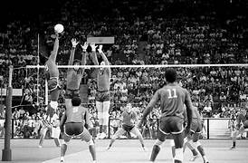

O voleibol foi criado em 1895 nos Estados Unidos por William George Morgan (1870-1942). O primeiro nome do voleibol foi “mintonette”. A criação de Morgan, que era professor de educação física, foi influenciada por uma série de fatores, tais como: ter um jogo em que o risco de lesão fosse reduzido; poder ser jogado em quadra fechada, como alternativa para o inverno; e para inovar as suas aulas.
Saiba mais em:
O vôlei vem ganhando cada vez mais visibilidade no cenário internacional, e a relação dos principais jogadores da modalidade tem se tornado um tópico relevante nas conversas esportivas. Dessa forma, se destacam: Alessandro Michieletto, Bartosz Kurek, Wilfredo León, György Grozer, Ricardo Lucarelli, dentre vários outros.
Saiba mais em:
O vôlei é um dos esportes coletivos mais populares do mundo e conta com competições importantes em nível de seleções e clubes. Entre os torneios internacionais de seleções, destacam-se o Campeonato Mundial da FIVB, realizado a cada quatro anos, a Liga das Nações (VNL), de periodicidade anual, e os Jogos Olímpicos, que reúnem as principais equipes masculinas e femininas do planeta. No cenário de clubes, o principal torneio é o Mundial de Clubes, organizado pela FIVB. Também há competições continentais relevantes, como o Europeu (CEV EuroVolley), além dos campeonatos Sul-Americano, Asiático e Africano. Entre as ligas nacionais mais fortes estão a Superliga Brasileira, a Serie A1 Italiana, a PlusLiga Polonesa e as ligas da Rússia e da Turquia, todas com alto nível técnico.
Saiba mais em: